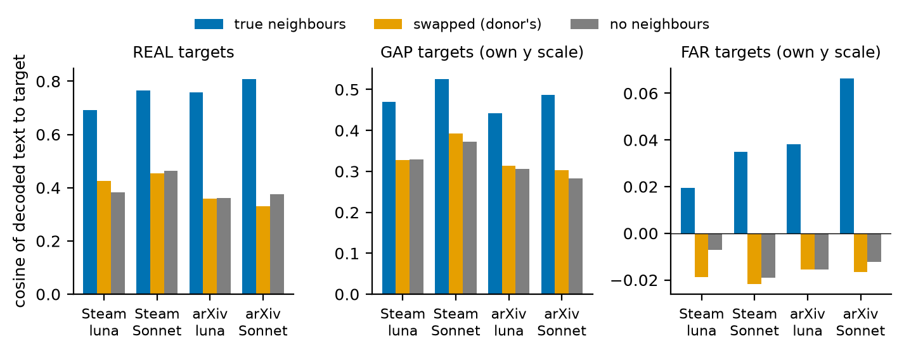
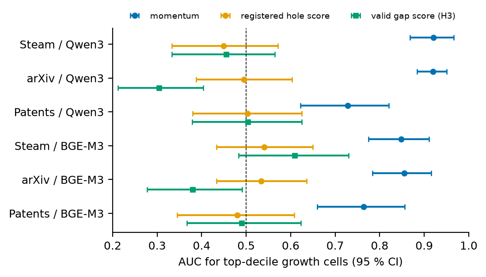
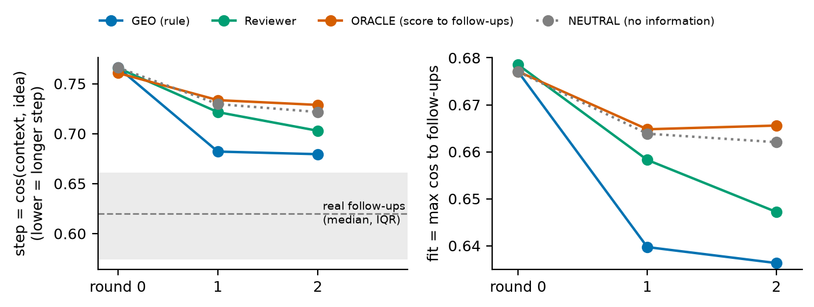

Three impossibility results about decoding embedding-space targets into coherent text (e.g., two_worlds) are machine-checked in Lean 4 in the paper's repository.
Abstract
A popular ideation recipe treats an embedding map of existing work as a guide: pick points far from everything and decode them into ideas. I test four ways such distances could guide ideation against what appeared later. (1) Far random directions are not text: no later item reaches a raw cosine above about 0.10 with one (after centring or whitening, 22 of 24 cells stay out of reach), and an LLM decoder shown a target's neighbours, with score-only feedback, writes those neighbours in all six target sets. A neighbour-free search writes coherent text at median cosine 0.57 and 0.47 to interior gaps, beating the nearest existing item on 15 and 14 of 20, but only 0.07 and 0.06 to far points. (2) On k-means cells of a past-only map, the registered hole score mostly tracks cell size and position; three density-based gap scores forecast which cells grow fastest at or below chance (AUC 0.30 to 0.66) and add nothing to momentum in Steam and arXiv, with patents inconclusive; more isolated new Steam games are slightly better reviewed. (3) LLM continuations of arXiv papers stay closer to the source than papers that cite it, under three user prompts and against proposal rewrites (gpt-4o) and April-December 2023 papers (OLMo). Critique lengthens this step beyond content-free revision, replicated on 150 new papers. Revealing a real follow-up's title turns the ideas by 0.032 along a follow-up-specific direction beyond revision; reviewer, oracle and distance feedback add 0.13, 0.08 and 0.34 of that turn (upper bounds 0.46, 0.46, 0.70), and their turn is not separable from revision or their longer step. (4) For inspiration material graded by distance, no inverted U was detected, on an anticipation margin that tracks format more than content. Original tests were registered before running, follow-ups (thirteen requested in two AI-agent reviews) after the main results; all are dated only by local git commits.
Problem
Gap-based ideation picks points far from existing work in an embedding map and decodes them into new ideas. It assumes that embedding-map distances indicate where good new work lies and that LLMs can be guided by them. The paper tests this premise against items released or published after a frozen date.
Approach
Past-only maps of Steam games, arXiv cs papers and US patents are built with Qwen3-Embedding and BGE-M3. Four claims are tested, most with pre-registration: decodability of far and interior gap points, using a randomized neighbour-swap intervention; whether gap scores of k-means cells forecast growth; whether feedback steers LLM continuations of arXiv papers towards real citing papers; and whether inspiration distance affects anticipation of future games. Supporting impossibility results, such as two coherence predicates agreeing on all observations yet placing the best coherent text on opposite sides of a bound, are machine-checked in Lean 4 (lean/LatentGap/Impossibility.lean).

Figure 1: Figure 1. Causal anchoring. Mean cosine of the decoded text to its target when the decoder is shown the target’s true neighbours, another target’s neighbours (swapped) or none, with the target and the score feedback unchanged; 20 targets per bar (luna = gpt-6-luna, Sonnet = Claude Sonnet 5.5). Swapping the neighbours lowers the landing on real and gap targets by 0.13 to 0.48 and removes
Results
Far random directions are not reachable by any later item or coherent text, and the decoder writes the neighbours it is shown in all 6 target sets. Interior gaps can be written as text, beating the nearest existing item by small margins. Gap scores forecast cell growth at or below chance and add nothing to momentum. Critique lengthens LLM continuations' step away from the source, but the turn towards real follow-ups is not separable from content-free revision. No inverted-U effect of inspiration distance was detected, and the anticipation measure tracks format more than content.

Figure 2: Figure 2. Forecasting which past-map cells grow fastest. AUC for the top decile of growth, scored directly from each cell’s momentum, its registered hole score, or one valid gap score (H3, the share of uncovered probe points; raw space, from the validity study’s refit of the 256 cells), with bootstrap 95 % intervals; 26 positives per row. The registered hole score is shown in Section 4 t

Figure 3: Figure 3. Iterative critique (gpt-4o, Qwen3, 150 contexts, three ideas per context and arm). Left: critique lengthens the step towards that of the real follow-ups (grey band: their interquartile range); revising with no information (NEUTRAL, dotted) already does part of it. Right: fit to those follow-ups falls in every arm, including the one whose feedback is the similarity to them. The
Arm
step
fit
hit
GEO
0.766 → 0.679
0.677 → 0.636
0.627 → 0.518
Reviewer
0.766 → 0.703
0.679 → 0.647
0.644 → 0.591
ORACLE
0.761 → 0.729
0.677 → 0.666
0.664 → 0.611
NEUTRAL
0.766 → 0.722
0.677 → 0.662
0.627 → 0.613
Iterative critique (gpt-4o, Qwen3): step, fit and hit from round 0 to final round